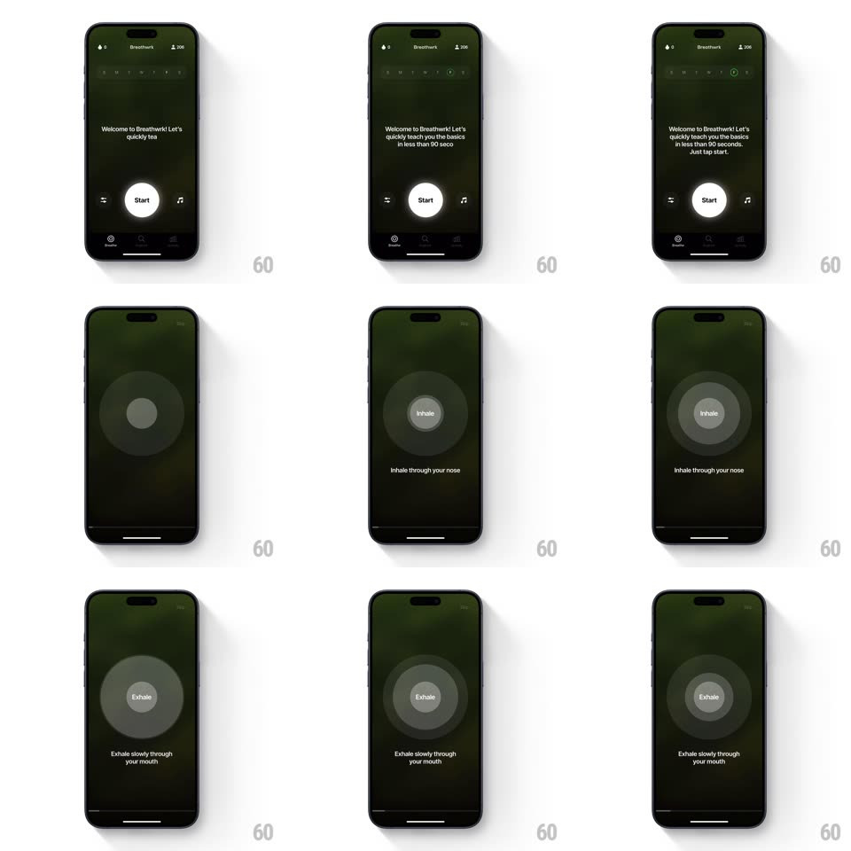

Media
Frame-by-frame

Rebuild this interaction 1:1: Breathwrk's guided-breath onboarding - typewriter welcome copy ("Welcome to Breathwrk! Let's quickly teach you the basics in less than 90 seconds.") with a Start button, then a pulsing concentric-circle breath guide with Inhale/Exhale cues.

Rebuild this interaction 1:1: Breathwrk's guided-breath onboarding - typewriter welcome copy ("Welcome to Breathwrk! Let's quickly teach you the basics in less than 90 seconds.") with a Start button, then a pulsing concentric-circle breath guide with Inhale/Exhale cues.
## Integration
Integration: stack-agnostic spec - springs given as stiffness/damping, timed motions as duration + curve; map every value to your framework and animation library of choice.
## Scene
Dark green-black screens: streak/points header, typewriter paragraph, white Start circle flanked by small icons. Breath stage: concentric gray rings around a center circle labeled "Inhale"/"Exhale", caption below ("Inhale through your nose" / "Exhale slowly through your mouth").
## Motion spec
Pattern: typewriter intro + breath-pacing rings.
- Welcome text types in (~35ms per character) with a block cursor; Start circle pulses gently (scale 1 -> 1.05, 1.6s loop) once typing finishes.
- Tap Start: text fades (250ms), rings fade in from center (400ms).
- Inhale phase (~4s): rings expand outward (scale 1 -> 1.35, ease-in-out), center label crossfades to "Inhale", caption "Inhale through your nose" fades up.
- Exhale phase (~4s): rings contract back (scale 1.35 -> 1, ease-in-out), label swaps to "Exhale", caption changes.
- The cycle loops; a faint glow on the outer ring brightens at full inhale and dims at full exhale.
## Calibration
- Ring expansion and breath phase timing are identical - the visual IS the pacer, no independent timing.
- Label swaps happen at the extremes, never mid-phase.
## Reduced motion
Rings hold at mid-scale; phase changes shown by label + caption only.
## Don't miss
- The center circle is the only solid element; rings are translucent washes.
- Captions are instructional and change with phase - keep nose/mouth wording distinct.